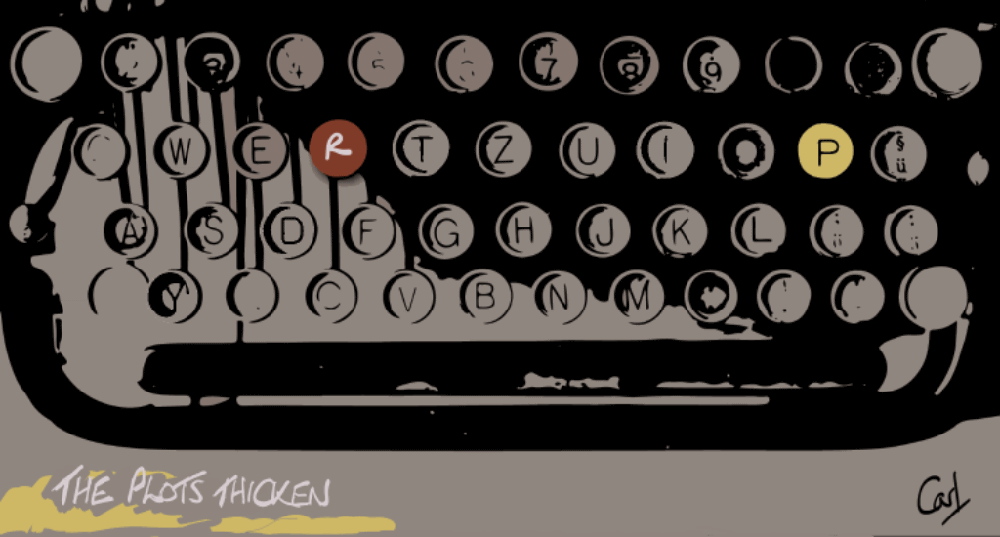
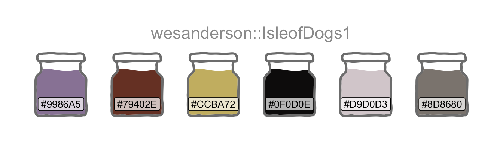

library(conflicted)
library(tidyverse)
conflict_prefer_all("dplyr", quiet = TRUE)
library(shiny)
library(gridlayout)
library(rvest)
library(scales)
library(pageviews)
library(bslib)
library(paletteer)
library(ggfoundry)
library(usedthese)
conflict_scout()Plots Thicken
R
apps
web scraping
Every story needs a good plot. Which plot types generate the most interest on Wikipedia?

One could think of data science as “art grounded in facts”. It tells a story through visualisation. Both story and visualisation rely on a good plot. And an abundance of those has evolved over time. Many have their own dedicated Wikipedia page
Which generate the most interest? How is the interest trending over time? Let’s build an interactive app to find out.
theme_set(theme_bw())
pal_name <- "wesanderson::IsleofDogs1"
pal <- paletteer_d(pal_name)
display_palette(pal, pal_name)
I’m going to start by harvesting some data from Wikipedia’s Statistical charts and diagrams category. I can use this to build a list of all chart types which have a dedicated Wikipedia article page. Using rvest (Wickham 2022) inside the app ensures it will respond to any newly-created articles.
charts <-
tibble(
chart = read_html(str_c(
"https://en.wikipedia.org/wiki/",
"Category:Statistical_charts_and_diagrams"
)) |>
html_elements(".mw-category-group a") |>
html_text()
)The pageviews (Keyes and Lewis 2020) package provides an API into Wikipedia. I’ll create a function wrapped around article_pageviews so I can later iterate through a subset of the list established in the prior code chunk.
pv <- \(article) {
article_pageviews(
project = "en.wikipedia",
article,
user_type = "user",
start = "2015070100",
end = today()
)
}I want an input selector so that a user can choose plot types for comparison. I also want to provide user control of the y-axis scale. A combination of fixed and log10 is better for comparing plots. Free scaling reveals more detail in the individual trends.
Although shinyuieditor (Strayer 2022) is currently in Alpha at the time of this update, using launch_editor("/content/project/thicken/") helped me modify the basic grid layout of the UI for this pre-existing app.R.
ui <- grid_page(
theme = bs_theme(version = 5, bootswatch = "simplex"),
layout = c(
"header header",
"sidebar line "
),
row_sizes = c(
"100px",
"1fr"
),
col_sizes = c(
"250px",
"1fr"
),
gap_size = "1rem",
grid_card(
area = "sidebar",
item_alignment = "top",
title = "Options",
item_gap = "13px",
dateRangeInput("dates",
label = "Date range",
start = "2015-07-01",
end = NULL
),
selectizeInput(
inputId = "article",
label = "Chart type",
choices = charts,
selected = c(
"Violin plot",
"Dendrogram",
"Histogram",
"Pie chart"
),
options = list(maxItems = 6),
multiple = TRUE
),
selectInput(
inputId = "scales",
label = "Fixed or free y-axis",
choices = c("Fixed" = "fixed", "Free" = "free"),
selected = "fixed"
),
selectInput(
inputId = "log10",
label = "Log 10 or normal y-axis",
choices = c("Log 10" = "log10", "Normal" = "norm"),
selected = "log10"
)
),
grid_card_text(
area = "header",
content = " Plot Plotter ",
alignment = "center",
is_title = FALSE,
icon = "logo1.png",
img_height = 30
),
grid_card_plot(area = "line")
)The server component outputs a faceted ggplot.
server <- \(input, output, session) {
subsetr <- reactive({
req(input$article)
pageviews <- map(input$article, pv) |>
mutate(
date = ymd(date),
article = str_replace_all(article, "_", " ")
) |>
filter(date >= input$dates[1], date <= input$dates[2])
}) |>
list_rbind()
output$line <- renderPlot({
p <- ggplot(
subsetr(),
aes(date,
views,
colour = article
)
) +
geom_line() +
scale_colour_manual(values = pal) +
geom_smooth(colour = "lightgrey") +
facet_wrap(~article, nrow = 1, scales = input$scales) +
theme(
legend.position = "none",
axis.text.x = element_text(angle = 45, hjust = 1),
plot.margin = margin(1, 1, 1, 1, "cm")
) +
labs(
x = NULL, y = NULL,
caption = "\nSource: Daily Wikipedia Article Page Views"
)
switch(input$log10,
norm = p,
log10 = p + scale_y_log10(
labels = label_number(scale_cut = cut_short_scale())
)
)
})
}
shinyApp(ui, server)And here’s the live shiny (Chang et al. 2022) app deployed via shinyapps.io.
Note the utility of selecting the right scaling. The combination of “fixed” and “normal” reveals what must have been “world histogram day” on July 27th 2015, but little else.
Turning non-interactive code into an app sharpens the mind’s focus on performance. And profvis (Chang et al. 2020), integrated into RStudio via the profile menu option, is a wonderful “tool for helping you understand how R spends its time”.
My first version of the app was finger-tappingly slow.
Profvis revealed the main culprit to be the pre-loading of a dataframe with the page-view data for all chart types (there are more than 100). Profiling prompted the more efficient “reactive” approach of loading the data only for the user’s selection (maximum of 8).
Profiling also showed that rounding the corners of the plot.background with additional grid-package code was expensive. App efficiency felt more important than minor cosmetic detailing (to the main panel to match the theme’s side panel). And most users would probably barely notice (had I not drawn attention to it here).
R Toolbox
Summarising below the packages and functions used in this post enables me to separately create a toolbox visualisation summarising the usage of packages and functions across all posts.
used_here()| Package | Function |
|---|---|
| base | c[6], library[11], list[1], switch[1] |
| bslib | bs_theme[1] |
| conflicted | conflict_prefer_all[1], conflict_scout[1] |
| dplyr | filter[1], mutate[1] |
| ggfoundry | display_palette[1] |
| ggplot2 | aes[1], element_text[1], facet_wrap[1], geom_line[1], geom_smooth[1], ggplot[1], labs[1], margin[1], scale_colour_manual[1], scale_y_log10[1], theme[1], theme_bw[1], theme_set[1] |
| gridlayout | grid_card[1], grid_card_plot[1], grid_card_text[1], grid_page[1] |
| lubridate | today[1], ymd[1] |
| pageviews | article_pageviews[1] |
| paletteer | paletteer_d[1] |
| purrr | list_rbind[1], map[1] |
| rvest | html_elements[1], html_text[1] |
| scales | cut_short_scale[1], label_number[1] |
| shiny | dateRangeInput[1], reactive[1], renderPlot[1], req[1], selectInput[2], selectizeInput[1], shinyApp[1] |
| stringr | str_c[1], str_replace_all[1] |
| tibble | tibble[1] |
| usedthese | used_here[1] |
| xml2 | read_html[1] |
References
Chang, Winston, Joe Cheng, JJ Allaire, et al. 2022. Shiny: Web Application Framework for r. https://CRAN.R-project.org/package=shiny.
Chang, Winston, Javier Luraschi, and Timothy Mastny. 2020. Profvis: Interactive Visualizations for Profiling r Code. https://CRAN.R-project.org/package=profvis.
Keyes, Os, and Jeremiah Lewis. 2020. Pageviews: An API Client for Wikimedia Traffic Data. https://CRAN.R-project.org/package=pageviews.
Strayer, Nick. 2022. Shinyuieditor: Build and Modify Your Shiny UI, Visually. https://rstudio.github.io/shinyuieditor/.
Wickham, Hadley. 2022. Rvest: Easily Harvest (Scrape) Web Pages. https://CRAN.R-project.org/package=rvest.